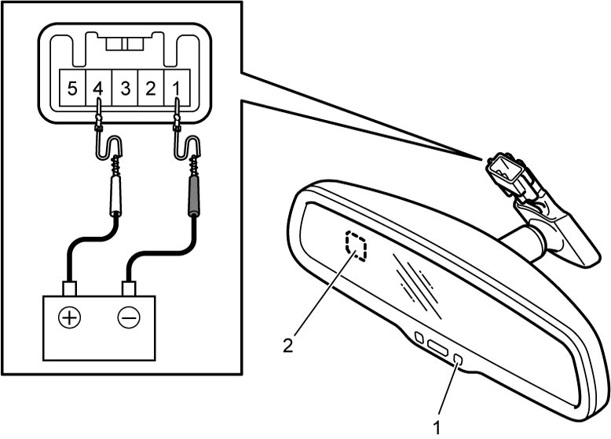

9E
| Inner Rear View Mirror (With Auto Dimming) Inspection |
1)Connect positive (+) and negative (–) battery terminals to terminals “4” and “1” of inner rear view mirror connector respectively.
2)Cover the front light sensor (2) and apply light to the rear light sensor (1) to check if color of inner rear view mirror changes.


 "Expand image")
3)Under the same condition as Step 2), connect positive (+) terminal of battery to terminal “5” and check if color of inner rear view mirror returns to initial color.